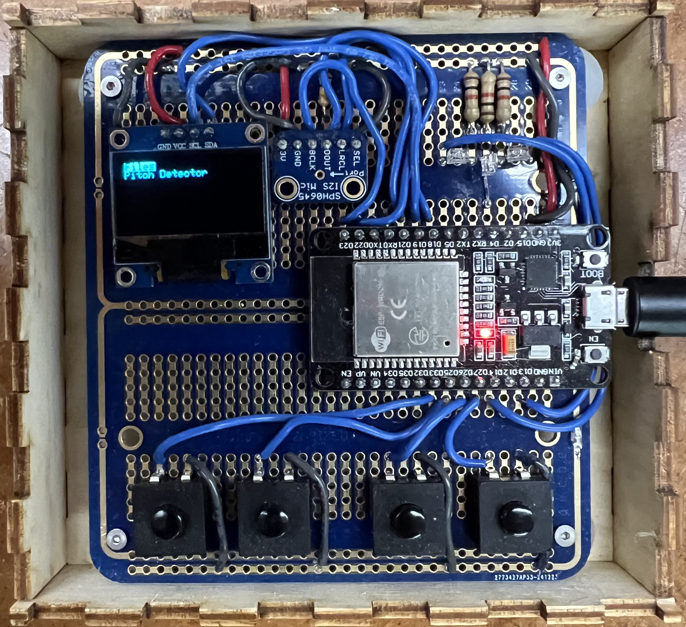

<div class="textcontainer"> <p class="margin"></p> <h3>Final Project: Live Tuner</h3> a device to tell you whether are sharp or flat while playing a song<br> <br> <video width="100%" controls> <source src="demo.mp4" type="video/mp4"> </video> <div> For my final project, I decided to make a live tuner which could tell you if you are off in any part of a song. Given my interest in singing, such a device could prove very useful. You can download all of the relevent files <a download href="tuner.zip">here</a>. </div><br> <br> <h4>How Tuning Works</h4> <div> While tuning, the mic's signal is constantly read and processed through some method into a pitch (the detected note) which is then compared against the current note in the selected midi track (or the closest note if using the generic pitch detector) (the target note). The current implemented methods for detecting the pitch from the raw signal are: <div class="indent"> - plain FFT<br> - cepstrum<br> - Harmonic Product Spectrum (hps)<br> - Yin<br> - Auto Correlation (acf) (currently used) </div> <br> Then the device outputs the following: <div class="indent"> - target note name (in SPN) (screen 1st line)<br> - difference in cents between detected and target note (screen 2nd line)<br> - comparison between detected and target note (LEDs: left: flat, middle: on pitch, right: sharp)<br> - if the tuner is paused (screen 4th line); </div> </div><br> <br> <h4>Input Handling</h4> <div> Meanwhile, the buttons can be used to navigate & control the device. The left two buttons are up and down (labelled in the code left and right). The right two are select and back.<br> <br> In menu navigation, the buttons function as you think they would. The navigation tree looks like this (selecting moves right & back moves left in this tree): <div class="code_background"> - files<br> <div class="indent"> - midi file<br> <div class="indent"> - track1 <div class="indent"> - Live tuning Mode </div> - track2<br> ... </div> - directory<br> <div class="indent"> ... </div> </div> - pitch detector<br> <div class="indent"> - generic pitch tuning Mode </div> </div> </div><br> <br> <h4>Software:</h4> <div> There is quite alot of code for this (1000+ lines). I believe for the most part that most of these methods and classes are straightforward in function (matching there name) aside from one thing. The Window classes (LiveTuningWindow, PitchTuningWindow, ExplorerWindow) are used polymorphically as just Window in Tuner, allowing them to be fully swapped out. Each one represents the current window and functionallity of the tuner (ie. tuning vs file navigation). These are swapped out by Tuner using the returned "window_code" from Window's tick function to know what the next window will be. <pre><div class="code_background" style="height: 800px;overflow: auto;"><code>#include <ESP_I2S.h> #include <SPI.h> #include <Wire.h> #include <Adafruit_GFX.h> #include <Adafruit_SSD1306.h> #include <string> #include <arduinoFFT.h> #include <yinacf.h> #include <vector> #include <LittleFS.h> #define I2C_SDA 18 #define I2C_SCL 19 #define SCREEN_WIDTH 128 // OLED display width, in pixels #define SCREEN_HEIGHT 64 // OLED display height, in pixels // Declaration for an SSD1306 display connected to I2C (SDA, SCL pins) // The pins for I2C are defined by the Wire-library. // On an arduino UNO: A4(SDA), A5(SCL) // On an arduino MEGA 2560: 20(SDA), 21(SCL) // On an arduino LEONARDO: 2(SDA), 3(SCL), ... #define OLED_RESET -1 // Reset pin # (or -1 if sharing Arduino reset pin) #define SCREEN_ADDRESS 0x3C ///< See datasheet for Address; 0x3D for 128x64, 0x3C for 128x32 #define BCLK 23 // aka SCK #define LRCL 22 // aka WS #define DOUT -1 // aka SDOUT, unused #define DIN 21 // aka SDIN #define MCLK -1 // unused #define buffer_size 1024 //for the mic #define sampling_rate 44100 //of the mic #define L_BUTTON 33 #define R_BUTTON 25 #define SELECT_BUTTON 26 #define BACK_BUTTON 27 #define BUTTON_TICK_PERIOD 8 #define PWM_RESOLUTION 8 #define PWM_FREQ 5000 #define FLAT_LED 13 #define SHARP_LED 14 #define ON_PITCH_LED 4 #define CENT_TOLERANCE 25 double sqr(double x) { return x * x; } class TunerButton { //note: buttons are toggles int pin; bool last_state; public: TunerButton(int pin) { this->pin = pin; pinMode(this->pin, INPUT_PULLUP); last_state = digitalRead(this->pin) == HIGH; } bool was_pressed() { bool new_state = digitalRead(pin) == HIGH; bool out = last_state ^ new_state; last_state = new_state; if (out) Serial.println("was_pressed"); return out; } }; class TunerLED { int pin; int power; bool state; public: TunerLED(int pin, int power) { this->pin = pin; this->power = power; pinMode(pin, OUTPUT); ledcAttach(pin, PWM_FREQ, PWM_RESOLUTION); state = false; off(); } void off() {ledcWrite(pin, 0);} void on() {ledcWrite(pin, power);} }; class TunerScreen { TwoWire I2C_screen = TwoWire(0); Adafruit_SSD1306 display = Adafruit_SSD1306(SCREEN_WIDTH, SCREEN_HEIGHT, &I2C_screen, OLED_RESET); public: TunerScreen() {} void begin() { I2C_screen.begin(I2C_SDA, I2C_SCL, 100000); // SSD1306_SWITCHCAPVCC = generate display voltage from 3.3V internally while (!display.begin(SSD1306_SWITCHCAPVCC, SCREEN_ADDRESS)) { Serial.println("failed to start the display, trying again"); } display.display(); reset(); } void reset() { display.clearDisplay(); display.cp437(true); // Use full 256 char 'Code Page 437' font print_settings(0, 0); } void print_settings(int16_t x, int16_t y) { print_settings(x, y, 1); } void print_settings(int16_t x, int16_t y, uint8_t size) { print_settings(x, y, size, SSD1306_WHITE, SSD1306_BLACK); } void print_settings(int16_t x, int16_t y, uint8_t size, uint16_t text_color, uint16_t background_color) { display.setCursor(x, y); display.setTextSize(size); display.setTextColor(text_color, background_color); } void print(const __FlashStringHelper * ifsh) { display.print(ifsh); } void print(String str) { display.print(str); } void print(char* str) { display.print(str); } void print(double str) { display.print(str); } void line(int16_t src_x, int16_t src_y, int16_t dst_x, int16_t dst_y) { display.drawLine(src_x, src_y, dst_x, dst_y, SSD1306_WHITE); } void flush() { display.display(); } }; class TunerMic { I2SClass mic_i2s; int32_t buffer[buffer_size]; size_t buffer_idx = 0; double vReal[buffer_size]; double vImag[buffer_size]; ArduinoFFT<double> fft = ArduinoFFT<double>(vReal, vImag, buffer_size, sampling_rate); YinACF<double> yin; size_t num_fresh_samples = 0; public: TunerMic() { mic_i2s.setPins(23, 22, -1, 21, -1); //SCK, WS, SDOUT, SDIN, MCLK mic_i2s.begin(I2S_MODE_STD, sampling_rate, I2S_DATA_BIT_WIDTH_32BIT, I2S_SLOT_MODE_MONO); yin.build(512, 8); //note: uses O(n * m) local memory so beware } void read() { size_t read_amount = (size_t) mic_i2s.available(); if (buffer_idx + read_amount / 4 > buffer_size) { size_t read1_size = 4 * (buffer_size - buffer_idx); size_t read2_size = read_amount - read1_size; mic_i2s.readBytes((char*) &buffer[buffer_idx], read1_size); mic_i2s.readBytes((char*) &buffer[0], read2_size); buffer_idx = read2_size / 4; } else { mic_i2s.readBytes((char*) &buffer[buffer_idx], read_amount); buffer_idx += read_amount / 4; } num_fresh_samples += read_amount / 4; } int64_t get_volume() { int64_t mean = 0; for (int i = 0; i < buffer_size; i++) { int64_t sample = buffer[i]; mean += sample; } mean /= buffer_size; int64_t deviation = 0; for (int i = 0; i < buffer_size; i++) { int64_t sample = buffer[i]; deviation += abs(mean - sample); } return deviation / buffer_size; } void load_fft() { size_t temp_buffer_idx = buffer_idx % buffer_size; for (size_t i = 0; i < buffer_size; i++) { vReal[i] = (double) buffer[temp_buffer_idx]; vImag[i] = 0.0; temp_buffer_idx++; temp_buffer_idx %= buffer_size; } fft.dcRemoval(); //fft.windowing(FFT_WIN_TYP_HAMMING, FFT_FORWARD); } double fft_pitch() { load_fft(); fft.compute(FFT_FORWARD); fft.complexToMagnitude(); return fft.majorPeak(); } //calculating the cepstrum, works with some sounds with many harmonics but not really voice, too unstable //note: also set fft's sample rate to 2.0 / sampling_rate double cepstrum_pitch() { load_fft(); fft.compute(FFT_FORWARD); for (int i = 0; i < buffer_size; i++) { vReal[i] = (double) log(abs(vReal[i]) + std::numeric_limits<double>::min()); vImag[i] = 0.0; } fft.compute(FFT_REVERSE); fft.complexToMagnitude(); return 1.0 / (fft.majorPeak() * (double) buffer_size); } // harmonic product spectrum, too unstable, still has overtone issues double hps_pitch() { const int num_frames = 4; const size_t frame_size = buffer_size / num_frames; double frames[buffer_size]; size_t dst_idx = 0; for (int i = 1; i <= num_frames; i++) { size_t src_idx = 0; double val = 0.0; for (int j = 0; j < i; j++) { val += vReal[src_idx++]; } frames[dst_idx++] = val / i; } for (size_t i = 0; i < frame_size; i++) { for (size_t j = 1; j < num_frames; j++) { vReal[i] *= vReal[i + frame_size * j]; } } size_t max_idx = 0; double max_amplitude = 0; for (size_t i = 0; i < frame_size; i++) { if (vReal[i] > max_amplitude) { max_amplitude = vReal[i]; max_idx = i; } } return ((double) max_idx * (double) sampling_rate) / buffer_size; } // yin pitch detection algorithm, so far, most accurate but also slowest (and most memory I think) // however, each individual tick (for each sample) returns a value, so if the rest is adapted for that, // it could be fast enough to not be an issue double yin_pitch() { size_t temp_buffer_idx = buffer_idx % buffer_size; for (size_t i = 1; i < buffer_size; i++) { yin.tick(buffer[temp_buffer_idx]); temp_buffer_idx++; temp_buffer_idx %= buffer_size; } return (double) sampling_rate * (double) yin.tick(buffer[temp_buffer_idx]); } double acf_pitch() { load_fft(); fft.compute(FFT_FORWARD); for (int i = 0; i < buffer_size; i++) { vReal[i] = vReal[i] * vReal[i] + vImag[i] * vImag[i]; vImag[i] = 0.0; } fft.compute(FFT_REVERSE); fft.complexToMagnitude(); for (int i = 0; i < 32; i++) { vReal[i] = 0.0; } return sampling_rate * sampling_rate / (fft.majorPeak() * buffer_size); } double get_pitch() { double pitch = std::numeric_limits<double>::quiet_NaN(); if (get_volume() > 1 << 22) { pitch = acf_pitch(); } return pitch; } bool tick(double* out) { if (num_fresh_samples < buffer_size) { read(); return false; } else { *out = get_pitch(); num_fresh_samples = 0; return true; } } }; class TempoEvent { public: uint64_t time_start; uint32_t micros_per_beat; TempoEvent(uint64_t time_start, uint32_t micros_per_beat) { this->time_start = time_start; this->micros_per_beat = micros_per_beat; } }; class MIDIDecoder { public: std::vector<uint8_t> bytes; size_t num_bytes; size_t byte_idx; int16_t format; int16_t num_tracks; int16_t ticks_per_beat; std::vector<TempoEvent> tempo_map; size_t tempo_map_idx; //note: only built to work with *only* 1 active note at a time bool paused; bool ready; uint64_t last_event_time; uint64_t time_paused; size_t track_end; int8_t active_note; // no note == -1 uint32_t micros_per_beat; uint8_t peek() {return bytes[byte_idx];} uint8_t peek(size_t offset) {return bytes[byte_idx + offset];} uint8_t pop() {return bytes[byte_idx++];} uint16_t pop16() { uint16_t out = pop() << 8; out |= pop(); return out; } uint32_t pop32() { uint32_t out = pop16() << 16; out |= pop16(); return out; } uint32_t pop_vval() { uint32_t val = 0; bool flag = true; while (flag) { val <<= 7; uint8_t next_byte = pop(); val |= next_byte & 0b01111111; flag = (next_byte & 0b10000000) == 0b10000000; } return val; } void process_header() { byte_idx = 0; uint32_t midi_indicator = 0; for (int i = 0; i < 4; i++) { midi_indicator <<= 8; midi_indicator |= pop(); } if (midi_indicator != 0x4d546864) {Serial.printf("invalid midi file: expected 0x4d546864 got %08x\n", midi_indicator); return;} byte_idx += 4; //skipping length indicator since it is constant format = pop16(); num_tracks = pop16(); ticks_per_beat = pop16(); } void generate_tempo_map() { tempo_map = std::vector<TempoEvent>(); tempo_map_idx = 0; if (format == 1) { byte_idx = 14; uint32_t midi_indicator = 0; for (int i = 0; i < 4; i++) { midi_indicator <<= 8; midi_indicator |= pop(); } if (midi_indicator != 0x4d54726b) {Serial.printf("invalid midi track: expected 0x4d54726b got %08x\n", midi_indicator);} size_t length = (size_t) pop32(); size_t next_track_idx = byte_idx + length; uint64_t time = 0; while (byte_idx < next_track_idx) { size_t event_start = byte_idx; time += ticks_to_micros(pop_vval()); uint8_t event_num = pop(); if (event_num == 0xFF) { event_num = pop(); if (event_num == 0x51) { byte_idx++; //already known 24 bit; micros_per_beat = pop() << 16; micros_per_beat |= pop() << 8; micros_per_beat |= pop(); tempo_map.push_back(TempoEvent(time, micros_per_beat)); break; } } } } } size_t event_size() { size_t size = 0; size_t old_idx = byte_idx; pop_vval(); size += byte_idx - old_idx; uint8_t event_num = pop(); size += 1; if (event_num < 0b11110000) event_num >>= 4; switch (event_num) { case 0b1000: size += 2; break; case 0b1001: size += 2; break; case 0b1010: size += 2; break; case 0b1011: size += 2; break; case 0b1100: size += 1; break; case 0b1101: size += 1; break; case 0b1110: size += 2; break; case 0b11110001: size += 1; break; case 0b11110010: size += 2; break; case 0b11110011: size += 1; break; case 0b11110100: Serial.println("read undefined midi message"); break; case 0b11110101: Serial.println("read undefined midi message"); break; // the next few are all 0 case 0b11110000: break; // TODO, system exclusive message, 0xF7 terminated case 0b11110111: break; // TODO, system exclusive message, 0xF7 terminated case 0b11111111: { size_t meta_event_start = byte_idx++; size += pop_vval(); size += byte_idx - meta_event_start; } } byte_idx = old_idx; return size; } uint64_t ticks_to_micros(uint32_t ticks) { return (uint64_t) ((double) micros_per_beat * (double) ticks) / ((double) ticks_per_beat); } public: MIDIDecoder() { ready = false; } void attach_file(std::vector<uint8_t> bytes) { this->bytes = bytes; this->num_bytes = bytes.size(); Serial.printf("file size: %d\n", this->num_bytes); ready = false; Serial.println("file start"); process_header(); Serial.println("header processed"); generate_tempo_map(); Serial.println("tempo map generated"); } std::vector<std::string> scan_tracks() { byte_idx = 14; // file header is 14 bytes => moves to first track header std::vector<std::string> out = std::vector<std::string>(); for (int i = 0; i < num_tracks; i++) { uint32_t midi_indicator = 0; for (int i = 0; i < 4; i++) { midi_indicator <<= 8; midi_indicator |= pop(); } if (midi_indicator != 0x4d54726b) {Serial.printf("invalid midi track: expected 0x4d54726b got %08x\n", midi_indicator); return std::vector<std::string>(0);} size_t length = (size_t) pop32(); size_t next_track_idx = byte_idx + length; while (byte_idx < next_track_idx) { size_t event_start = byte_idx; pop_vval(); uint8_t event_num = pop(); if (event_num == 0xFF) { event_num = pop(); if (event_num == 0x03) { size_t length = pop_vval(); std::string name((char*) &bytes[byte_idx], length); out.push_back(name); break; } } } if (out.size() <= i) { // no track name found; out.push_back("NO NAME"); } byte_idx = next_track_idx; } return out; } void select_track(size_t idx) { ready = true; byte_idx = 14; // file header is 14 bytes => moves to first track header for (size_t i = 0; i < idx; i++) { uint32_t midi_indicator = 0; for (int i = 0; i < 4; i++) { midi_indicator <<= 8; midi_indicator |= pop(); } if (midi_indicator != 0x4d54726b) {Serial.printf("invalid midi track: expected 0x4d54726b got %08x\n", midi_indicator); return;} size_t length = (size_t) pop32(); byte_idx += length; } uint32_t midi_indicator = 0; for (int i = 0; i < 4; i++) { midi_indicator <<= 8; midi_indicator |= pop(); } if (midi_indicator != 0x4d54726b) {Serial.printf("invalid midi track: expected 0x4d54726b got %08x\n", midi_indicator); return;} size_t length = (size_t) pop32(); track_end = byte_idx + length; last_event_time = micros(); active_note = -1; micros_per_beat = 500000; //2 BPS == 120 BPM } int8_t tick() { if (ready) { if (!paused) { uint64_t current_time = micros(); size_t event_start = byte_idx; uint64_t delay = ticks_to_micros(pop_vval()); while (current_time >= last_event_time + delay) { //Serial.printf("offset: %07o\n", event_start); uint8_t event_num = pop(); //Serial.printf("event: %02x\n", event_num); if (event_num < 0b11110000) event_num >>= 4; switch (event_num) { case 0b1000: { // note off active_note = -1; pop(); //released key always causes complete silence pop(); //velocity break; } case 0b1001: { // note on active_note = pop(); pop(); //velocity break; } case 0b11111111: { // Meta event // redundant in case of format 1 event_num = pop(); switch (event_num) { case 0x51: { // tempo change byte_idx++; // already known 24 bit micros_per_beat = pop() << 16; micros_per_beat |= pop() << 8; micros_per_beat |= pop(); break; } } break; } } byte_idx = event_start; byte_idx += event_size(); if (byte_idx >= track_end) ready = false; event_start = byte_idx; last_event_time += delay; if (tempo_map_idx < tempo_map.size() && tempo_map[tempo_map_idx].time_start <= last_event_time) { micros_per_beat = tempo_map[tempo_map_idx++].micros_per_beat; } uint32_t ticks = pop_vval(); //Serial.printf("tick delay: %d\n", ticks); delay = ticks_to_micros(ticks); } byte_idx = event_start; } return active_note; } else { return -1; } } void pause() { time_paused = micros(); paused = true; } void unpause() { uint64_t current_time = micros(); last_event_time += current_time - time_paused; paused = false; } void toggle_paused() { if (paused) unpause(); else pause(); } bool is_paused() { return paused; } bool is_ready() {return ready;} }; double freq_to_cents(double freq) { //from C_0 return (log2(freq) - log2(440.0)) * 1200.0 + 5700.0; //440hz = A_4 } String cents_to_spn(double cents) { // rounds to closest spn int int_cents = (int) cents + 50; // makes rounding to middle equivilent to rounding down, convienient for octaves int octave = int_cents / 1200; String out = ""; int_cents %= 1200; if (int_cents < 100) out+="C"; else if (int_cents < 200) out+="C#/Db"; else if (int_cents < 300) out+="D"; else if (int_cents < 400) out+="D#/Eb"; else if (int_cents < 500) out+="E"; else if (int_cents < 600) out+="F"; else if (int_cents < 700) out+="F#/Gb"; else if (int_cents < 800) out+="G"; else if (int_cents < 900) out+="G#/Ab"; else if (int_cents < 1000) out+="A"; else if (int_cents < 1100) out+="A#/Bb"; else if (int_cents < 1200) out+="B"; out += octave; return out; } double harmonic_correction(double target, double original, int num_down, int num_up) { if (original < target) { double last_estimate = original; for (int i = 2; i < 2 + num_up; i++) { double estimate = original + log2(i) * 1200.0; if (estimate > target) { if (abs(target - estimate) < abs(target - last_estimate)) { last_estimate = estimate; } break; } else { last_estimate = estimate; } } return last_estimate; } else { double last_estimate = original; for (int i = 2; i < 2 + num_down; i++) { double estimate = original - log2(i) * 1200.0; if (estimate < target) { if (abs(target - estimate) < abs(target - last_estimate)) { last_estimate = estimate; } break; } else { last_estimate = estimate; } } return last_estimate; } } double octave_correction(double target, double original) { double target_cents_from_octave_c = fmod(target + 600.0, 1200.0) - 600.0; double original_cents_from_octave_c = fmod(original + 600.0, 1200.0) - 600.0; return target - target_cents_from_octave_c + original_cents_from_octave_c; } std::vector<uint8_t> read_file(File file) { std::vector<uint8_t> out = std::vector<uint8_t>(); while (file.available()) { out.push_back(file.read()); } return out; } class Device { public: TunerButton l_button = TunerButton(L_BUTTON); TunerButton r_button = TunerButton(R_BUTTON); TunerButton select_button = TunerButton(SELECT_BUTTON); TunerButton back_button = TunerButton(BACK_BUTTON); TunerLED flat_led = TunerLED(FLAT_LED, 50); TunerLED sharp_led = TunerLED(SHARP_LED, 255); TunerLED on_pitch_led = TunerLED(ON_PITCH_LED, 10); TunerScreen screen = TunerScreen(); TunerMic mic = TunerMic(); MIDIDecoder decoder = MIDIDecoder(); Device() {}; void begin() { LittleFS.begin(); screen.begin(); } void leds_off() { flat_led.off(); sharp_led.off(); on_pitch_led.off(); } }; class Window { public: Device* device; int window_code; //int output gives the "new" window virtual int tick() {}; void attach(Device* device) {this->device = device;} }; class LiveTuningWindow : public Window { double detected_freq = 1.0; int previous_target = 0; int tick_counter = 0; public: LiveTuningWindow() { window_code = 0; } int tick() override { tick_counter++; if (tick_counter >= BUTTON_TICK_PERIOD) { bool left = device->l_button.was_pressed(); bool right = device->r_button.was_pressed(); bool select = device->select_button.was_pressed(); bool back = device->back_button.was_pressed(); tick_counter = 0; if (back) return 1; if (select) device->decoder.toggle_paused(); } int target = device->decoder.tick(); bool new_detected_freq = device->mic.tick(&detected_freq); if (target != previous_target || new_detected_freq) { previous_target = target; device->screen.reset(); if (target >= 0) { double target_cents = (double) (100 * target); device->screen.print_settings(0, 0, 2); device->screen.print(cents_to_spn(target_cents)); if (detected_freq != detected_freq) { // NaN check device->screen.print_settings(0, 16, 2); device->screen.print("Quiet"); device->leds_off(); } else { double detected_cents = freq_to_cents(detected_freq); detected_cents = octave_correction(target_cents, detected_cents); device->screen.print_settings(0, 16, 2); double off_cents = detected_cents - target_cents; device->screen.print(off_cents); device->leds_off(); if (off_cents < -CENT_TOLERANCE) { device->flat_led.on(); device->sharp_led.off(); device->on_pitch_led.off(); } else if (off_cents > CENT_TOLERANCE) { device->flat_led.off(); device->sharp_led.on(); device->on_pitch_led.off(); } else { device->flat_led.off(); device->sharp_led.off(); device->on_pitch_led.on(); } } } else { device->leds_off(); //Serial.println("Rest"); device->screen.print_settings(0, 0, 2); device->screen.print("Rest"); } if (device->decoder.is_paused()) { device->screen.print_settings(0, 48, 2); device->screen.print("- Paused -"); } device->screen.flush(); } return 0; } }; class PitchTuningWindow : public Window { double detected_freq = 1.0; int target_note = 0; int tick_counter = 0 ; bool is_paused = false; public: PitchTuningWindow() { window_code = 2; } int tick() override { tick_counter++; if (tick_counter >= BUTTON_TICK_PERIOD) { bool left = device->l_button.was_pressed(); bool right = device->r_button.was_pressed(); bool select = device->select_button.was_pressed(); bool back = device->back_button.was_pressed(); tick_counter = 0; if (back) return 1; if (select) is_paused = !is_paused; } bool new_freq = device->mic.tick(&detected_freq); if (new_freq) { device->screen.reset(); if (detected_freq != detected_freq) { // NaN check device->screen.print_settings(0, 0, 2); device->screen.print("Quiet"); device->leds_off(); } else { double detected_cents = freq_to_cents(detected_freq); device->screen.print_settings(0, 0, 2); device->screen.print(cents_to_spn((double) (100 * target_note))); device->screen.print_settings(0, 16, 2); if (!is_paused) { target_note = (((int) detected_cents) + 50) / 100; } double off_cents = detected_cents - (double) (100 * target_note); device->screen.print(off_cents); if (off_cents < -CENT_TOLERANCE) { device->flat_led.on(); device->sharp_led.off(); device->on_pitch_led.off(); } else if (off_cents > CENT_TOLERANCE) { device->flat_led.off(); device->sharp_led.on(); device->on_pitch_led.off(); } else { device->flat_led.off(); device->sharp_led.off(); device->on_pitch_led.on(); } } if (is_paused) { device->screen.print_settings(0, 48, 2); device->screen.print("- Paused -"); } device->screen.flush(); } return 2; } }; class ExplorerData { Device* device; std::string path; public: std::vector<std::string> items; int idx; ExplorerData() { path = ""; items = std::vector<std::string>(); idx = 0; } void attach_device(Device* device) { this->device = device; reload_path(); } void reload_path() { Serial.println("reload"); if (path == "") { items = std::vector<std::string>(); items.push_back("Files"); items.push_back("Pitch Detector"); } else { File root = LittleFS.open(path.c_str()); Serial.println("open"); if (root.isDirectory()) { items = std::vector<std::string>(); File file = root.openNextFile(); while (file) { items.push_back(file.name()); file = root.openNextFile(); } } else { Serial.println("midi attach"); std::vector<uint8_t> bytes = read_file(root); Serial.println("midi read1"); device->decoder.attach_file(bytes); Serial.println("midi read2"); items = device->decoder.scan_tracks(); } } } void pop_path() { Serial.println("pop"); Serial.println(path.c_str()); if (path == "" || path == "/") { path = ""; } else { path = path.substr(0, path.rfind('/')); if (path == "") { path = "/"; } } Serial.println(path.c_str()); reload_path(); idx = 0; } int push_path() { Serial.println("push"); if (path == "") { switch (idx) { case 0: { path = "/"; reload_path(); return 1; } case 1: { return 2; } } } else { File root = LittleFS.open(path.c_str()); if (root.isDirectory()) { Serial.println("dir"); Serial.println(path.c_str()); if (path == "/") { path = path + items[idx]; } else { path = path + "/" + items[idx]; } Serial.println(path.c_str()); reload_path(); idx = 0; return 1; } else { Serial.println("midi file"); device->decoder.select_track(idx); return 0; } } } }; class ExplorerWindow : public Window { ExplorerData* data; size_t window_start_idx = 0; public: ExplorerWindow() { window_code = 1; } int tick() override { bool left = device->l_button.was_pressed(); bool right = device->r_button.was_pressed(); bool select = device->select_button.was_pressed(); bool back = device->back_button.was_pressed(); if (select) { return data->push_path(); } if (back) { data->pop_path(); return 1; } if (left && !right) { data->idx = (data->idx + data->items.size() - 1) % data->items.size(); } if (right && !left) { data->idx = (data->idx + 1) % data->items.size(); } if (data->idx < window_start_idx) { window_start_idx = data->idx; } else if (data->idx > window_start_idx + 7) { window_start_idx = data->idx - 7; } device->screen.reset(); for (int i = 0; i < 8 && i < data->items.size(); i++) { if (window_start_idx + i == data->idx) { device->screen.print_settings(1, 8 * i, 1, SSD1306_BLACK, SSD1306_WHITE); device->screen.line(0, 8 * i, 0, 8 * i + 7); } else { device->screen.print_settings(0, 8 * i, 1, SSD1306_WHITE, SSD1306_BLACK); } device->screen.print(data->items[window_start_idx + i].substr(0, 20).c_str()); } device->screen.flush(); return window_code; } void attach_explorer_data(ExplorerData* data) { this->data = data; } }; class Tuner { Device device = Device(); ExplorerData explorer_data; Window* active_window; public: Tuner() {} void begin() { device.begin(); explorer_data.attach_device(&device); //active_window = new PitchTuningWindow(); ExplorerWindow* explorer = new ExplorerWindow(); explorer->attach_explorer_data(&explorer_data); active_window = explorer; active_window->attach(&this->device); } void tick() { if (active_window != NULL) { //Serial.println("tick"); int last_window_code = active_window->window_code; int new_window_code = active_window->tick(); if (last_window_code != new_window_code) { device.leds_off(); delete active_window; switch (new_window_code) { case 0: { active_window = new LiveTuningWindow(); break; } case 1: { ExplorerWindow* explorer = new ExplorerWindow(); explorer->attach_explorer_data(&explorer_data); active_window = explorer; break; } case 2: { active_window = new PitchTuningWindow(); break; } default: { Serial.println("unknown window code"); break; } } active_window->attach(&this->device); } } } }; Tuner tuner = Tuner(); void setup() { Serial.begin(115200); // put your setup code here, to run once: tuner.begin(); } void loop() { // put your main code here, to run repeatedly: tuner.tick(); } </code></div></pre> </div><br> <br> <h4>Hardware / Bill of materials:</h4> <div class="code_background"> device case:<br> <div class="indent"> - 3mm plywood (7 pieces)<br> - 4 long m2 screws & nuts<br> - 4 plastic spacers<br> - zipties </div> circuitry:<br> <div class="indent"> - protoboard (1/2 length, 2x width)<br> - wires<br> - solder<br> - 3 1 kΩ resistors<br> - 1 100 kΩ resistor<br> - microcontroller (esp32-wroom)<br> - usb power bank<br> - inputs:<br> <div class="indent"> - microphone (SPH0645) <br> - 4 buttons (toggle)<br> </div> - outputs<br> <div class="indent"> - oled screen (SSD1306)<br> - 3 LEDs (relative pitch indicator) (2 red, 1 green) </div> </div> </div><br> <br> <h4>Assembly:</h4> <div> All electrical components are soldered directly to the protoboard (note: the microcontroller is placed between the 2 sides to access all of its pins). Then sauder wires according to this (VCC = 3.3V): <pre><div class="code_background">D13 -> Flat LED -> 1 kΩ resistor -> Ground D4 -> On Pitch LED -> 1 kΩ resistor -> Ground D14 -> Sharp LED -> 1 kΩ resistor -> Ground Ground -> Up button -> D33 Ground -> Down button -> D25 Ground -> Select button -> D26 Ground -> Back button -> D27 Ground -> SSD1306 GND VCC -> SSD1306 VCC D19 -> SSD1306 SCL D18 -> SSD1306 SDA Ground -> SPH0645 GND VCC -> SPH0645 3V Ground -> SPH0645 SEL D23 -> SPH0645 BCLK D22 -> SPH0645 LRCL SPH0645 DOUT -> D21 SPH0645 DOUT -> 100 kΩ resistor -> Ground</div></pre> <p></p><br> Now take the middle wood panel (the one with 8 total holes) and use zipties through the square holes to secure the power bank. Then take the protoboard and, using m2 screws, nuts, and some spacers, attach it to the wood. Then, attach the remaining wood panels by simply pressing them onto a matching set of fingers (a rubber mallet can help attach and a chisel can be used to remove them). Then flash the microcontroller with the code and whatever midi files you want to use. To flash the files, follow this <a href="https://randomnerdtutorials.com/arduino-ide-2-install-esp32-littlefs/" target="_blank">tutorial (Arduino IDE 2)</a> or this <a href="https://randomnerdtutorials.com/esp32-littlefs-arduino-ide/" target="_blank">one (Arduino IDE 1)</a>. </div><br> <br> <h4>Bonus: Tuner Stand</h4> <div> to hold the tuner and read its screen, I made this stand. Fairly straightforward to build, just cut the pieces out of 4 mm cardboard and assemble. </div> <img src="tuner stand.jpeg" width="100%"><br> </div>